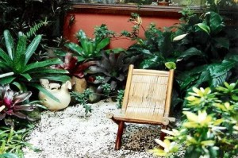

Cia. Ex-sedentário
vamo, vamo, vamo…
Faz tempo que não publico aqui. A correria tem me feito usar o twitter para relatar meus passos.
Mas hoje, precisei postar uma meta (que apenas disse ao Claudio). Eu deixei de ser Obeso Mórbido. Palavra feia.
Explicando, os médicos utilizam o IMC (Ãndice de massa corporal) que é calculado com o peso dividido pela altura ao quadrado. E se este número for igual ou superior a 40, classifica-se o indivÃduo como obeso mórbido.
Isso me dava o direito de sentar naqueles bancos azuis do Metrô. A partir desta semana não posso mais. 🙂

A partir de agora minha classificação é obeso grau 2. Essa foi a primeira meta de muitas, obrigado a todos que me incentivam.
Hoje é aniversário da nossa primeira mulher postadora. Primeira Mulher e membro mais empolgada com provas oficiais. Que entendeu o espÃrito de alegria e festividade, pregadas no blog.
Parabéns Ana. Seus posts colorem este blog. Seus belos relatos nos empolga. Sua energia nos renova. E não veio sozinha. Veio com suas maravilhosas filhas, que estão aà para o que der (para correr) e vier.
Felicidades hoje e sempre. Muitas corridas e muitos belos posts para nós!
Manter os treinos em meio a rotina pesada que todos nós temos, não é fácil. Um ano atrás, enquanto eu compensava minha inabilidade para correr com posts engraçados, escrevi um cordel para o Alex. A responsabilidade bateu tão forte que,  justo na semana inaugural do horário de verão, eu me propus fazer seis treinos na semana, levantando as quatro da matina. O que significa três, por assim dizer. Quase pirei o cabeção, mas vencer o desafio foi bem legal.
Vou repetir aqui o Cordel que foi escrito para o Alecão, mas que vale muito para mim, hoje, que não posso perder o pique só porque as madrugadas ficarão mais escuras e as noites das duas primeiras semanas, mais curtas.
Então lá vai cordelzinho escrito há um ano:
Estava firme num relato
Sóbrio como um Bacharel
Sem que ao menos percebesse
Surgiu rima pra dedel
Sucumbi não teve jeito
Está nascendo um cordel
Cá lembrando de conversa
Que falou Gontran Antão
Vem chegando e é em breve
O horário de verão
Pois então em tempo eu faço
Ao Alex sugestão
Que lindeza tua coragem
Desde semana passada
De ter feito os teus treinos
No “escurim†da madrugada
Mas agora a hora verte
pra minar tua empreitada.
Não te assustes meu gordinho
Não estou te pondo medo
Mas com esse horário novo
Terás de pular mais cedo
Que não causará angustia
Se me ouvires o segredo
Vai “treinando†desde agora
A deitar-te em hora antes
E em dia intercalado
Também cedo te levantes (04:30)
Assim estarás bem safo
E treinando como dantes
Se mudança se aproxima
E não tem como impedir
O negócio é estratégia
Pra ansiedade não surgir
Bota fé nessa mandinga
Que de resto é só curtir
Este blog foi parido
Com um mote solidário
De carinho e incentivo
Pra quem for um sedentário
Aceitamos bem as dicas
Sem pagar nenhum salário
Estou feliz todo faceiro
Com sorrisos encho cesta
Porque o sol brilhando forte
Anuncia que hoje é sexta
Convidando-nos a todos
A fazer uma grande festa.
Para todo mundo que torce pela equipe Ex-sedentario. Para quem se afeiçoou a saga dos Primos Dundes que contagiou mais gente e virou Equipe. Para quem gosta de ver o Claudião pirando de felicidade. Para todo mundo eu tenho uma noticia de arrepiar.
Eu sempre dizia que a São Silvestre estava guardada para um momento especial. Que a São Silvestre estava guardada para quando o Alecão fosse dela participar. E não é que ele me confirmou. Ano passado foi apenas o Thiago, que nos deixou emocionados e cheios de vontade com o relato da sua partipação em 2009. Agora é a vez do Alecão. E eu estarei lá para conferir, curtir, fotografar e me emocionar!!!!!!
Alecão e Claudio na São Silvestre 2010! Aguardamos mais “Ex-sedentários” Aguardamos todos os amigos que virão de Belo Horizonte, Curitiba e de muitos outros lugares. Todos unidos pelo paixão de correr, na corrida mais popular do Brasil!
Eu estou muito feliz. Eu vou correr a São Silvestre, COM O MEU IRMÃO, PARCEIRO E ETERNO AMIGO.
Alecão, esta noticia foi o melhor presente que você poderia ter me dado neste ano de 2o1o!!!!!!!!!!!!!!!!!!!
Esta frase abre o arquvio de corridas, do Fábio Namiuti. Eu pensei muito no que poderia escrever no tÃtulo deste post. Mas nada encaixa tão bem. A frase é simples, concisa, mas MUITO rica.
Melhor que o caminho é o caminhar. Encarar um treinamento um pouco mais sério e focado tem sido, para mim, um cair sem parar de fichas. Estou numa fase em que estou gostando do fato de a cada dia, tomar pé do quanto eu tenho que aprender. Noutro tempo, tomar pé de uma dificuldade real e iminente era sinal de que uma compulsão alimentar estava na porta, já querendo tomar conta de toda minha existência. Eu sou ansioso, sou inseguro, mas nem passa pela minha cabeça desistir de correr só porque as dificuldades que existem para todos, em mim são só um pouco mais agudas. São mais agudas, mas não são impossÃveis.
O que eu farei é aproveitar muito bem o apoio que venho tenho de corredores amigos que, a cada dia novo, estão comigo para me incentivar e comemorar comigo cada degrau subido, e, principalmente, para me ensinar. Eu estou gostando cada dia mais de correr, estou treinando duro, minha cabeça tem doido ultimamente de tanto pensar, planejar e refletir sobre treinos futuros, presentes e passados. Mas a corrida continua no lugar que eu reservei para ela, desde agosto de 2009. Continua sagrada, leia:se prazerosa.
Este post tomou um rumo diferente do que tinha pensado em fazer quando liguei o computador. Ficou meio “cabeça” e autoanalÃtico. E eu relamente estava muito a fim de descrever como foi o treino de ontem.
Talvez na ordem inversa poderia até ficar bom, mas agora vai assim mesmo.
O relógio iria tocar de madrugada às 03:40 horas. Eu iria fazer um caminho de outras idas a USP, que inclui tomar o primeiro ônibus até a Estação de Trem Domingos de Moraes e de lá ir correndo até a USP, num percurso bacana de 8km. Contudo, o Henrique acordou-me as 03:00. Como eu tinnha conseguido deitar no horário planejado, entendi essa interrupção do sono como um sinal. Um sinal para eu tomar coragem e fazer o que eu vinha pensando em fazer há muito tempo.
Quatro horas da manhã, eu soltei o cronômetro na Avenida Mutinga e fui correndo, desde casa até a USP. Num horário normal seria possivel fazer um percuso de 9,5km. Mas naquele horario, optei por um caminho 4,5km mais longo. Foi uma delÃcia ter ido correndo, principalmente porque ir de ônibus é algo que cansa, extressa e não é treino de corrida. O lado ruim, se é que posso chamar assim, foi o fato de que o medo e ansiedade de algo tão novo em horário singular tornam impossÃvel seguir um pace planejado. Corri até a USP num ritmo totalmente fora do ideal para um treino longo do Claudião. Mas o orgulho de tê-lo feito valeu o preço. Engraçado que o Paulo Motta me disse que 15 quilômetros em 01H57Min tinha sido muito rápÃdo para um treino longo, mas o que ele não sabia e nem eu (só agora eu conferi no mapmyrun) é que já tinha corrido quase 17km em 01H57Min. Resumo do treino: 04H20Min, com três paradas. Total de 33km e um PESCOÇO DURO.  O plano para o treino eram 36km. Ainda não aprendi a correr com sofrimento. Mas eu tenho muita fé de que no momento em que for preciso eu abrirei mão do correr só com prazer em nome de uma linha chegada. (Se Deus quiser!)
O Thiago não falta em treino. O Celular também não atendeu. Espero que ele não esteja doente.
 Â
Â

Â
            Colegas, Amigos e Simpatizantes,
           Viramos mais uma página do nosso calendário. Tivemos nos primeiros dias do mês o compromisso cÃvico de votar, alguns conseguiram emplacar seu candidato e outros esperam pelo 2º. Turno com grandes expectativas de ver seu candidato eleito.
           Chegado o segundo final de semana do mês, somos agraciados com um feriado prolongado, hummm………. ótimo para os treinos (embora a previsão diga que o tempo ficará nublado e chuvoso com baixas temperaturas), atualizar a leitura, desfrutar o tempo com a famÃlia, enfim, fazer muita ou pouca coisa (tanto para aqueles que poderão emendar como para os que não poderão).
           Ao ler um artigo esta semana me deparei com o poema abaixo, como diriam os adolescentes….. tipo assim, meio que auto-ajuda, mas nesse mundo da corrida pelo qual me enveredei de forma amadora, onde a grande maioria treina por conta própria, faz seus treinos quando pode e, não só nesse aspecto penso eu, mas apropriado também para nosso cotidiano.
          Talvez uma reflexão para servir de mantra matinal, nem precisa ser o poema todo, pode ser apenas uma estrofe, porque NÓS podemos fazer a diferença.
Â
          Um bom final de semana e um ótimo feriadão.
          Abraços Fraternais!!!
   ÂÂ
Â
Â
Você não pode mudar sua vida inteira. Â
 Você só pode alterar a sua próxima ação.
 – Â
Você não pode mudar um relacionamento com uma pessoa amada.
                                           Você só pode mudar sua interação seguinte. Â
– Â
  Você não pode mudar seu trabalho inteiro. Â
  Você só pode alterar a sua próxima tarefa. Â
– Â
  Você não pode alterar sua composição corporal.  Â
Você só pode alterar a sua próxima refeição. Â
–Â Â
Você não pode mudar seu nÃvel de condicionamento fÃsico. Â
Você só pode começar a se mover. Â
–Â Â
Você não pode resolver toda a bagunça de sua vida. Â
Você só pode escolher para se livrar de uma coisa, agora mesmo. Â
–Â Â
Você não pode eliminar a suas dÃvidas. Â
Você só pode fazer um pagamento, ou comprar um item a menos desnecessário. Â
–Â Â
Você não pode mudar o passado, ou controlar o futuro. Â
Você só pode mudar o que você está fazendo agora. Â
–Â Â
Você não pode mudar tudo. Â
Você só pode alterar uma, coisa pequena.
 E isso é tudo o que preciso.
   Â
Vamo, vamo, vamo… Equipe Ex-sedentário!!!!
Eu estou treinando
http://www.mapmyrun.com/route/br/s%e3o%20paulo/855128645482985478Â (ontem a noite, pelo tempo de 60 minutos)
O Alekão está treinando.
O Thiago está treinando.
Seu Pedro só está esperando por uma oportunidade.
Ana e Aninha estão com mil planos legais.
Nossos filhos já estão inscritos em provas.
Só está faltando mesmo é mais festa por aqui.
Sim, claro, eu sou o primeiro que deve se penitenciar e mudar esse quadro.
E assim o farei. O Alecão o fará. Nós o faremos….
Vamo, vamo, vamo…. Equipe do meu coração!
Este é o meu último post (no blog da TAEQ), foi uma super experiência por qual passei. E o principal é que me deu um empurrãozinho, eu estava precisando. Já fazia tempo que tinha me proposto a deixar de ser sedentário. Mas parecia que faltava algo.
Este processo por qual passei, acabou criando o algo que faltava. Durante o processo pensei em desistir várias vezes, principalmente quando um médico recomendou a eu não correr. Sei que ele tinha razão, mas o risco era meu e decidi correr mesmo assim. Consegui terminar a prova inteiro e a partir dai decidi que quero o melhor para mim.
A semana após a prova, foi de experimentações de sentimentos novos e de preocupação maior comigo mesmo.
As amizades surgiram, quero e vou ainda correr de novo com esta turma incrÃvel.
Quero agradecer a oportunidade e dizer que espero encontrar a todos nas próximas corridas.
E fui, afinal: Vamo, vamo, vamo…
Após uma semana de descanço, resolvi voltar aos treinos. Segunda feira, eu fui para a academia, foram 10 minutos na esteira e depois uma sessão de musculação. Na terça feira, eu caminhei e corri alternados durante 50 minutos. Fora que estou firme no regime, quero participar de outras provas.
Tenho como meta participar de mais algumas provas de 5 Km, partir para uma 10 Km e se tudo der certo, participar da São Silvestre no fim do ano.
E como se diz… Vamo, Vamo, Vamo…

   Quando iniciou o mês achei que conseguiria realizar a proeza de correr todo final de semana, mas quase não consegui.
   Primeiro, porque inscrevi a Syssi numa corrida kids e o site informava que o evento seria no domingo, mas a data marcada era sábado…… por conta disso eu deixei de marcar qualquer compromisso para o dia 26/09.
À noite depois do merecido descanso da Corrida de Revezamento navegando na net li um artigo que dizia estarem abertas inscrições para a Maratona das Pontes, da qual Melinha havia comentado comigo e eu não quis participar por não estar preparada para 21 km. Agora o site trazia outra informação, haveria também o percurso de 5 km, então minhas lombrigas vibraram…. a distância e há uma semana da corrida ainda com inscrições abertas,  imediatamente fiz a minha.
   Aqui começaria o meu calvário da semana, de acordo com o regulamento lido no domingo os kits deveriam ser retirados nos 23, 24 e 25, agora no portal informava que a retirada seria nos dias 24 e 25.Â
   Na quinta feira a tardinha fui procurar na caixa de e-mail a confirmação de minha inscrição, rodei tudo quanto foi site, os lançamentos de meus cartões de crédito, nada de… não consegui localizar, mas numa dessas andanças li num portal que no local da retirada dos kits ainda poderia ser realizado as  inscrições.
   Como no site do evento no começo do mês de setembro acusava somente o percurso de 21 km e agora havia a inclusão de 5 km, depois a mudança da data de retirada dos kits, fiquei receosa e liguei para a organização, mas deu linha ocupada por várias vezes. À noite comentei com Melinha minha decepção, as incorreções das informações da corrida, por outro lado a previsão dizia que o final de semana seria chuvoso uma desculpa para talvez não correr, mas no fundo não era isso que eu queria.
   Sexta perto da hora do almoço Melinha manda um e-mail dizendo que havia ligado para a organização e confirmaram que as inscrições ainda poderia ser realizada até as 18 hs de sábado, passando o nome de quem eu deveria procurar. Beleza!!!
   Sábado o dia amanheceu nublado sem indicações de chuva com abertura de sol. Fiz minha inscrição antes de levar a Sy para sua corrida.
   Domingo – o grande dia, acordamos cedo, quase tudo pronto, ouço Syssi dizendo que estava chovendo, impossÃvel, não ouvi nenhum barulho, quando olhei pela janela vi a rua molhada, a chuva estava começando, rapidamente peguei 2 capas de chuva para eles e fomos. Pensei que fosse passageira, só que conforme chegávamos na zona sul, intensificou as chuvas e o pior, naquela região já chovia há tempos, tanto que o CET com 40 minutos para prova ainda estavam interditando as ruas nas imediações do local do evento.
   Paramos no estacionamento e fiz alguns alongamentos para os braços, o marido me olhava com um olhar cético e avisou que não sairia do carro, Sy logo ligou o GPS e colocou num programa de TV, era melhor eles ficarem longe da chuva e com alguma coisa para distração.
   O tempo passava e não adiantava ficar esperando, com 10 minutos para as 7 hs sai do carro e debaixo de uma cobertura no estacionamento fiz uns esticados para as pernas (sei que não é o recomendado), o frio foi passageiro e a chuva intensa, então fiquei debaixo de chuva andando de um lado a outro aguardando a largada já que não tinha lugar para se esconder. Se a largada foi no horário fiquei sem saber, como em algumas outras provas esqueci o relógio/cronometro em casa (por falta de hábito de usar no cotidiano).
   Dada a largada, nem preciso comentar que de cara precisei procurar lugar para pisar de tantas poças existentes perto do inÃcio da subida da Ponte Transamérica, além das poças, tanto na subida como descida da ponte era preciso desviar do curso da água, a chuva castigou os corredores. Quando cheguei no km 2, senti que toda minha roupa estava molhada, como se tivessem jogado um balde de água, mas o boné protegia meu olhos da chuva. Nessas alturas o tênis já estava ensopado.
   Quando fiz o retorno corri observando a paisagem, o trem que passava e os pouco passageiros que deviam estar nos olhando e pensando o quanto loucos somos em correr naquele tempo, a vegetação na encosta do morro, o Rio Pinheiros que quase passou despercebido (pois em outras provas naquela região sua presença foi bem marcante tamanho o mau cheiro que exalava). A chuva foi intensa do começo ao fim de meu percurso.
   Depois de cruzar a linha de chegada e entregar o chip, recebi apenas um energético e 2 goiabinhas de chocolate, não vi frutas ou outro lanche, se tinha foram entregues apenas para os corredores da meia maratona. Como a desorganização já começou pelo regulamento não poderia ser diferente no final. Acho que esse foi mais um motivo de ter tão poucos corredores no evento. Agora fico temerosa em participar de outros eventos dessa organizadora.
   Indo ao encontro do maridão e Sy fui pisando em ovos porque o tênis já incomodava,  senti que estava com bolha no arco dos pés pelo fato de ter corrido sem meias com medo de que pudesse enrolar no calcanhar e atrapalhar no percurso.
   No caminho lembrei-me de ter lido num post  uma dica para levar sempre uma muda de roupa…….. e que falta estaria fazendo naquele momento! Tirei apenas minha camiseta e vesti a jaqueta (que estava seca no carro), depois coloquei uma capa de chuva para manter a temperatura do corpo e fomos para casa. No percurso pegamos a marginal e pude contemplar os outros guerreiros que escolheram a meia maratona, a extensão da pista era de perder de vista, neste momento a chuva já era mais branda.
   Quando corri em Salvador (apesar da chuva ter sido intensa antes, durante a prova parou, voltando somente no final, fiquei molhada, mas consegui chegar ao hotel sem frio, e com a roupa quase seca), diferente do que imaginei…… aqui em Sampa embora a chuva fosse intensa, não senti frio durante a corrida. Só senti frio alguns minutos depois de ter terminado a prova.
   Bom, quando estávamos chegando em casa avistei da S. João o minhocão com um colorido vermelho Ãmpar por ter sido naquele domingo palco de mais uma etapa de corrida de rua…… ah, nesse momento não mais chovia nesta região.
   Chegado a minha casa tratei de tomar um banho bem quente para não ficar resfriada, tomamos novamente nosso café da manhã e fui para baixo das cobertas, logo adormeceria plenamente realizada. O resto do domingo estava mais para ficar na cama dormindo ou vendo TV, porque ficou nublado com pancadas ocasionais.
   Após dias de espera foi divulgado o resultado da corrida, fiz em 44min19seg  acima de minha expectativa, enfim, fica para a próxima eu baixar esse tempo.  Não me darei por vencida!!! Afinal consegui correr todos os domingos de Setembro!
   Agora é anunciada uma pausa, devido à s eleições no próximo domingo. Neste perÃodo vou pegar seriamente nos treinos e exercÃcios durante a semana, porque na segunda quinzena do mês de outubro volto para a pista.
   NAMASTÊ!!!
Â
Â
Â


Nós somos 100 JuÃzo
Nós somos Baleias
.jpg "DSC01868 (1024x576)")
.jpg "DSC01879 (1024x576)")

.jpg "IMG_7307 (1024x768)")


{kind=link}
{kind=link}
Últimos comentários